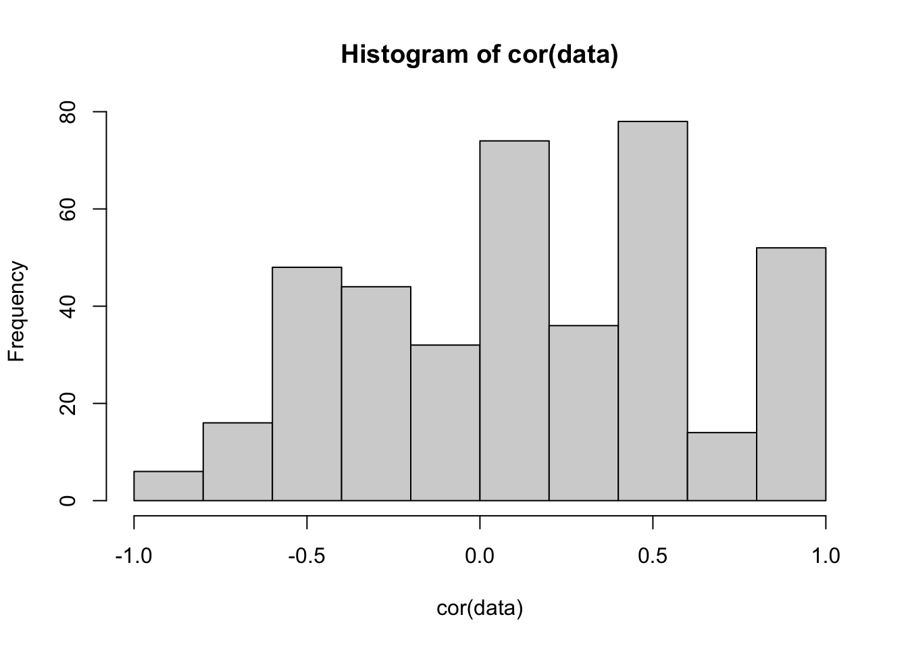
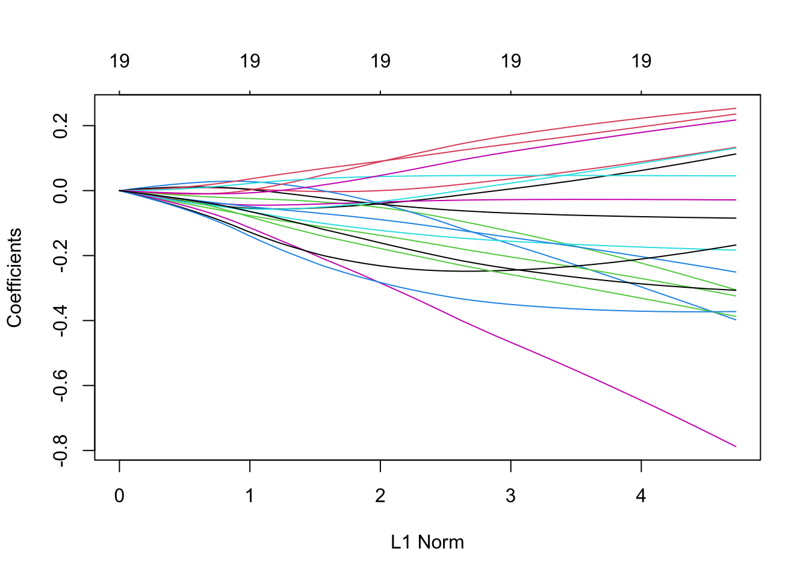
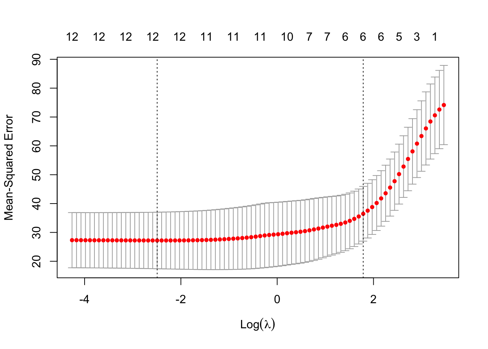

3 Bias-variance trade-off
3.1 Understanding the bias-variance trade-off

3.2 Optimizing the bias-variance trade-off
3.2.1 Feature selection
3.2.2 Regularization
Regularization means adding information or structure to a system in order to solve an ill-posed optimization problem or to prevent overfitting. There are many ways of regularizing a machine learning model. The most important distinction is between shrinkage estimators and estimators based on model averaging.
Shrikage estimators are based on the idea of adding a penalty to the loss function that penalizes deviations of the model parameters from a particular value (typically 0). In this way, estimates are “shrunk” to the specified default value. In practice, the most important penalties are the least absolute shrinkage and selection operator; also Lasso or LASSO, where the penalty is proportional to the sum of absolute deviations (\(L1\) penalty), and the Tikhonov regularization aka Ridge regression, where the penalty is proportional to the sum of squared distances from the reference (\(L2\) penalty). Thus, the loss function that we optimize is given by
\[ loss = fit - \lambda \cdot d \]
where fit refers to the standard loss function, \(\lambda\) is the strength of the regularization, and \(d\) is the chosen metric, e.g. \(L1\) or\(L2\):
\[ loss_{L1} = fit - \lambda \cdot \Vert weights \Vert_1 \]
\[ loss_{L2} = fit - \lambda \cdot \Vert weights \Vert_2 \]
\(\lambda\) and possibly d are typically optimized under cross-validation. \(L1\) and \(L2\) can be also combined what is then called elastic net (see Zou and Hastie (2005)).
Model averaging refers to an entire set of techniques, including boosting, bagging and other averaging techniques. The general principle is that predictions are made by combining (= averaging) several models. This is based on on the insight that it is often more efficient having many simpler models and average them, than one “super model”. The reasons are complicated, and explained in more detail in Dormann et al. (2018).
A particular important application of averaging is boosting, where the idea is that many weak learners are combined to a model average, resulting in a strong learner. Another related method is bootstrap aggregating, also called bagging. Idea here is to boostrap (use random sampling with replacement ) the data, and average the bootstrapped predictions.
To see how these techniques work in practice, let’s first focus on LASSO and Ridge regularization for weights in neural networks. We can imagine that the LASSO and Ridge act similar to a rubber band on the weights that pulls them to zero if the data does not strongly push them away from zero. This leads to important weights, which are supported by the data, being estimated as different from zero, whereas unimportant model structures are reduced (shrunken) to zero.
LASSO \(\left(penalty \propto \sum_{}^{} \mathrm{abs}(weights) \right)\) and Ridge \(\left(penalty \propto \sum_{}^{} weights^{2} \right)\) have slightly different properties. They are best understood if we express those as the effective prior preference they create on the parameters:
As you can see, the LASSO creates a very strong preference towards exactly zero, but falls off less strongly towards the tails. This means that parameters tend to be estimated either to exactly zero, or, if not, they are more free than the Ridge. For this reason, LASSO is often more interpreted as a model selection method.
The Ridge, on the other hand, has a certain area around zero where it is relatively indifferent about deviations from zero, thus rarely leading to exactly zero values. However, it will create a stronger shrinkage for values that deviate significantly from zero.
3.2.2.1 Ridge - Example
We can use the glmnet package for Ridge, LASSO, and elastic-net regressions.
We want to predict the occurrence of the African Elephant (Classification Task), 19 bioclim (environmental variables, see help of the dataset) are our predictors and they are highly collinear:
library(glmnet)Loading required package: MatrixLoaded glmnet 4.1-7library(EcoData)
data = EcoData::elephant$occurenceData
hist(cor(data))
m1 = glmnet(y = data$Presence, x = scale(data[,-1]), family = "binomial", alpha = 0)The glmnet function automatically tries different values for lambda:
cbind(coef(m1, s = 0.001), coef(m1, s = 0.5))20 x 2 sparse Matrix of class "dgCMatrix"
s1 s1
(Intercept) -0.99488324 -0.780014853
bio1 0.11271724 -0.055980600
bio2 0.13314858 0.002595185
bio3 -0.30527292 -0.026252048
bio4 -0.39768514 0.024350194
bio5 -0.18331069 -0.073192300
bio6 -0.02860151 -0.044787626
bio7 -0.08476021 -0.001723074
bio8 0.25325588 0.010139565
bio9 -0.32415880 -0.085263374
bio10 -0.25068839 -0.054433012
bio11 0.13073390 -0.057325676
bio12 -0.78787155 -0.134876767
bio13 -0.16752784 -0.146520805
bio14 0.23564006 0.043352576
bio15 -0.38701027 -0.094950092
bio16 -0.37231958 -0.162089670
bio17 0.04547655 0.026451709
bio18 0.21734755 -0.003571031
bio19 -0.30681718 -0.0758851753.2.2.2 LASSO - Example
By changing \(alpha\) to 1.0 we use a LASSO instead of a Ridge regression:
m2 = glmnet(y = data$Presence, x = scale(data[,-1]), family = "binomial", alpha = 1.0)
cbind(coef(m2, s = 0.001), coef(m2, s = 0.5))20 x 2 sparse Matrix of class "dgCMatrix"
s1 s1
(Intercept) -1.1790698999 -0.7021879
bio1 5.2201447390 .
bio2 0.4825871907 .
bio3 -1.2446394503 .
bio4 -0.8831104598 .
bio5 -0.0009278259 .
bio6 . .
bio7 . .
bio8 . .
bio9 -2.1368721806 .
bio10 -3.4058093768 .
bio11 . .
bio12 -4.3452607245 .
bio13 1.1177210101 .
bio14 0.8468788216 .
bio15 -1.7662333813 .
bio16 0.4975102865 .
bio17 . .
bio18 0.5713151479 .
bio19 0.0041414946 . 3.2.2.3 Elastic-net - Example
By setting \(alpha\) to a value between 0 and 1.0, we use a combination of LASSO and Rdige:
m3 = glmnet(y = data$Presence, x = scale(data[,-1]), family = "binomial", alpha = 0.5)
cbind(coef(m3, s = 0.001), coef(m3, s = 0.5))20 x 2 sparse Matrix of class "dgCMatrix"
s1 s1
(Intercept) -1.1283328 -0.7021879
bio1 3.0270008 .
bio2 0.6036299 .
bio3 -1.2874038 .
bio4 -1.5366454 .
bio5 -0.2581393 .
bio6 . .
bio7 . .
bio8 0.2640327 .
bio9 -1.6896702 .
bio10 -1.7723493 .
bio11 . .
bio12 -3.6918225 .
bio13 0.9367339 .
bio14 0.6333207 .
bio15 -1.4308360 .
bio16 0.2560483 .
bio17 0.1654974 .
bio18 0.5438264 .
bio19 . . 3.2.3 Hyperparameters
Generally, parameters such as \(\lambda\) and \(\alpha\) that, for example, control the complexity or other parameters that control their learning or the optimization are called hyperparameters. Comming back to our glmnet example:
We can plot the effect of \(\lambda\) on the effect estimates:
plot(m1)
So which lambda should we choose now? If we calculate the model fit for different lambdas (e.g. using the AUC):
lambdas = seq(0.001, 0.5, length.out = 100)
AUCs =
sapply(lambdas, function(l) {
prediction = predict(m1, newx = scale(data[,-1]), s = l)
AUC = Metrics::auc(data[,1], prediction)
return(AUC)
})
plot(lambdas, AUCs)
We see that the lowest lambda achieved the higehst AUC - which is not surpsiring because the unconstrained model, the most complex model, has the highest fit, so no bias but probably high variance (with respect to the bias-variance tradeoff).
We want a model that generalizes well to new data, which we need to “simulate” here by splitting of a holdout before the training and using the holdout then for testing our model:
library(glmnet)
library(EcoData)
data = EcoData::elephant$occurenceData
data[,-1] = scale(data[,-1])
# Split data
indices = sample.int(nrow(data), 0.8*nrow(data))
train = data[indices,]
test = data[-indices,]
# Train model on train data
m1 = glmnet(y = train$Presence, x = train[,-1], family = "binomial", alpha = 0.0)
# Test model on test data
pred = predict(m1, newx = as.matrix(test[,-1]), s = 0.01)
# Calculate performance on test data
Metrics::auc(test$Presence, pred)[1] 0.8001035Let’s do it again for different values of lambdas:
lambdas = seq(0.00001, 0.5, length.out = 100)
AUCs =
sapply(lambdas, function(l) {
prediction = predict(m1, newx = as.matrix(test[,-1]), s = l)
AUC = Metrics::auc(test[,1], prediction)
return(AUC)
})
plot(lambdas, AUCs)
Hyperparameter tuning describes the process of finding the optimal set of hyperparameters for a certain task. They are usually data specific, so they have to tuned for each dataset.
If we do only one split it could happen that we only find a set of hyperparameters that are best suited for this specific split and thus we usally do several splits so that each observation is once an observation in the test dataset, cross-validation
3.2.4 Cross-validation
The cv.glmnet function does per default a 10xCV (so 10 splits) and in each split different values for \(\lambda\) are tested (based on the deviance (-2xlogLik)):
m1 = glmnet::cv.glmnet(x = scale(data[,-1]), y = data$Presence, family = "binomial")
m1
Call: glmnet::cv.glmnet(x = scale(data[, -1]), y = data$Presence, family = "binomial")
Measure: Binomial Deviance
Lambda Index Measure SE Nonzero
min 0.0001448 79 0.8217 0.009043 18
1se 0.0005845 64 0.8307 0.008226 15plot(m1)
So low values of \(\lambda\) seem to achieve the highest (or lowest Binomial Deviance) predictive performance.
If we want to tune \(\alpha\) and \(\lambda\) simoustanously, we need the glmnetUtils package:
library(glmnetUtils)
Attaching package: 'glmnetUtils'The following objects are masked from 'package:glmnet':
cv.glmnet, glmnetm2 = cva.glmnet(x = scale(data[,-1]), y = data$Presence, family = "binomial", alpha = seq(0, 1.0, length.out = 10), lambdas = seq(0.0001, 0.2, length.out = 10), nfolds = 3)
plot(m2)
3.2.5 Error metrics
Dormann, Carsten F, Justin M Calabrese, Gurutzeta Guillera-Arroita, Eleni Matechou, Volker Bahn, Kamil Bartoń, Colin M Beale, et al. 2018. “Model Averaging in Ecology: A Review of Bayesian, Information-Theoretic, and Tactical Approaches for Predictive Inference.” Ecological Monographs 88 (4): 485–504.
Zou, Hui, and Trevor Hastie. 2005. “Regularization and Variable Selection via the Elastic Net.” Journal of the Royal Statistical Society: Series B (Statistical Methodology) 67 (2): 301–20.